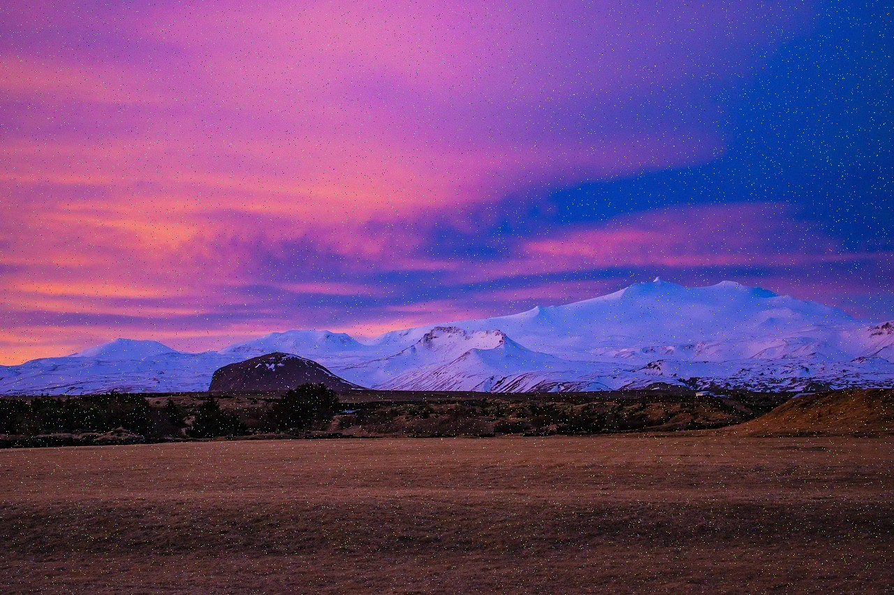
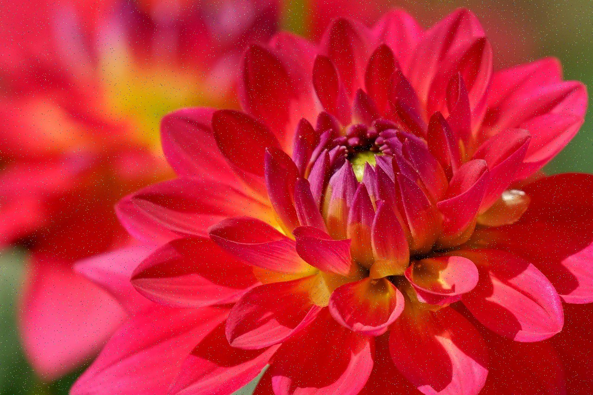
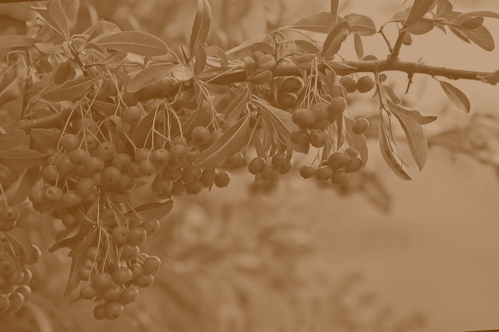

Twilight Over Snowy PeaksA wide landscape of snow-covered mountains beneath a vibrant purple and pink twilight sky, creating a calm and otherworldly atmosphere.

Crimson BloomA close-up macro shot of a vivid red flower with layered petals, highlighted by warm sunlight and a softly blurred background.

Sepia BerriesA vintage-style sepia image of berry clusters hanging from leafy branches, giving a nostalgic and timeless feel.